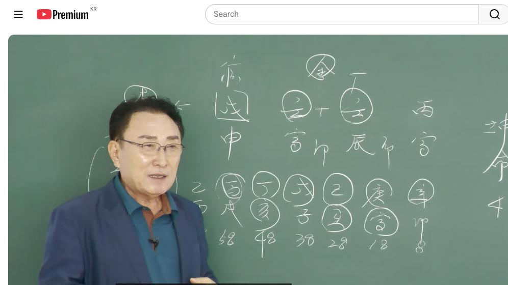

남촌물상TV 전체 문서 › 동영상 V0133
사주로 내 적성 찾아 성공하는 방법,

| 문서 번호 | V0133 (동영상) |
|---|---|
| 영상 URL | https://www.youtube.com/watch?v=w5OiOxFLvss |
| 영상 ID | w5OiOxFLvss |
| 게시일 | 2025-06-23 |
| 길이 | 28:34 (1714초) |
| 조회수 | 1,103회 (수집 시점 기준) |
| 카테고리 | Howto & Style |
| 자막 | ko (자동생성) |
| 수집 시각 | 2026-08-30 19:08 (KST) |
영상 설명 (YouTube 설명 원문 그대로)
사주에 잘하는 적성을 찾아 직업을 선택하면 성공한다
당신 사주에 맞는 완벽한 직업은 찾는다.
사주대로 직업을 선택하면 대박!
전체 자막 (684구간 · 타임스탬프 클릭 시 해당 장면으로 이동)
[0:02][음악]
[0:05]여자 사주 41세 병인 임진 이민
[0:09]무신 자 이런 사주가 있어요. 자
[0:12]여기서 없는 걸 먼저 찾으라 그랬죠?
[0:15]뭐가 없어요? 다 있죠. 근데 이렇게
[0:18]여자 사주로서이 사주 특징 얼 무슨
[0:21]팔 무슨 사주? 양팔동 사주다. 이제
[0:24]이거이 정도는 얼 여러분들 우리가
[0:26]알고 넘어가야지. 그리고 소위 양팔동
[0:29]사주의 특징을 잠깐 말씀을 드리자면
[0:31]여자라도 남자 같은 기지를 갖고
[0:33]태어난 사람이에요. 그럼 뭐냐?
[0:35]신체적인 조건이 여자의 그 그
[0:39]조건보다도 남자 성향으로 갈 수 있는
[0:41]성향이 좀 강합니다. 그래서 체질상이
[0:44]좀 강하다 이렇게 보시면 돼요. 이게
[0:46]소위 양팔동 사주로 볼 수 있는
[0:47]거예요. 자, 그러면은이 사주
[0:50]원칙적으로 뭐 괜찮게 보이죠?
[0:52]괜찮아. 괜찮게 보이잖아요. 여기에이
[0:55]임수의 물이 재을 먼저 한번
[0:58]찾아봅시다. 물이 많잖아요, 지금.
[1:00]현재 큰 물이. 그럼 물을 생산할 수
[1:03]있는 힘도 있고. 다 좋아요. 자,
[1:05]근데 여기에 물이 많다 보면은 자,
[1:09]문제가 있는게 뭐가 문제가 있어요?
[1:12]물이 많으면.
[1:14]자,이 관의 관이
[1:17]무토의 관이
[1:20]관이 무너질 염류가 있죠. 네.
[1:22]이게 이게 이게 제일 단점이이 사주가
[1:25]그러면 여자 사주의 무토의 관을
[1:29]지키기 위해서는 뭐가 필요해?
[1:32]목이 필요하다. 여기에 필요한게 결과
[1:35]목이에요.
[1:38]자, 그러니까 피로이 목만 심어
[1:40]놓으면이 사주는 안전한 사주예요.
[1:42]그러면 살게 생기게 편한 사주인데
[1:45]선택의 여지를 잘하냐 못하냐에 따라서
[1:48]사람이 고생하고 안 하고 합니다.
[1:49]음. 그 이분 같은 경우는
[1:53]목이라는 것은 쉽게 뭐예요?
[1:55]교육이죠. 교육, 건축 사람을
[1:57]상대하는 것 하는데
[1:59]여기에 천간에 경금이 없으니까
[2:01]건축하고 관계는 없는 거예요. 금이
[2:03]없기 때문에. 자, 그러면이 사람
[2:05]경우는 목이라는 것은 교육으로 보도
[2:07]된다. 자, 그러면 우리가 얼름
[2:09]생각할 때 물이 많이 있어. 물에서
[2:12]노는게 뭐가 놀아요? 금이 놀고 자,
[2:14]금이 놀고 그다음에 뭐가 떠?
[2:17]병호가 뜬다 그러면 다 되는 거예요.
[2:20]그래서이 사람 입장에서는 금이이
[2:24]임수의 물에 금이 놓을 수 있다는
[2:27]것은 소위 우리가 학교 다닐 때
[2:29]얘기하면 하와 금의 물의 관계에는
[2:33]애체형으로 보시면 된다.
[2:35]이제 이거 관계를 여러분들이 잘
[2:37]이해하시면 돼요. 그래서 진로
[2:38]상담하실 때 물에 놓을 수 있는 금이
[2:42]있고 천년에 지금 뭐 왔어요? 자
[2:44]경금 신금이 왔죠?
[2:46]그러니까이 이런 상태으로 금이 물에
[2:48]놀아주죠. 자, 그다음에 태양이 떠
[2:51]주죠. 자, 그다음에 무토에 나무만
[2:54]심으면 된다. 이게 이제이 사람의
[2:57]핵심적인 요인에 가장 필요한 거예요.
[3:01]자, 그럼이 사람이 고등학교 때
[3:04]만약에 대학을 선정한다면 어떤
[3:07]것이냐? 금이 물려서 논다는 얘기는
[3:10]굉장히 강해. 자, 무리에서 금이
[3:13]놀고 태양이 비춰 주니 얼마나
[3:14]좋겠어요? 근데 지지에이 보시면
[3:18]인세계가 되잖아요. 인세계.
[3:22]이제 이게 이게 당연히 자기가 할 수
[3:25]있는 거는 교육에 관련된 쪽이 하고
[3:27]싶은 생각이 드는 거예요. 그래서이
[3:29]사람한테 너 예체능에 관련된 일 했을
[3:31]건데 어쩌니까 사실 제가 체육할 때도
[3:35]잘했고 예체능을 가고 싶었다
[3:36]이거예요. 그래서 예체능을 하고
[3:39]싶어서 체대를 가고 싶었는데 집안
[3:42]환경상치 못해서 결과 못 갔다 이렇게
[3:44]해요. 그래서 지금도 평생 후회라고
[3:46]있습니다. 이거예요.이 이 사람은
[3:50]그 길로 가서 교육자 길로 갔으면
[3:52]안전에 굉장히 편한 사람이 되는
[3:54]거예요. 그거 길로 가지 못했기
[3:57]때문에 선택의 여지의 잘못으로
[4:00]지금까지 고생할 수밖에 없다.
[4:04]자, 그러면이 사람이 결혼했을까요,
[4:05]안 했을까요?
[4:08]뭘로 보라 그랬어요? 대운대. 대운을
[4:10]보라고 그랬잖아요. 자, 여기에
[4:14]기토가 올 때는 하고 싶은 마음
[4:18]이런 거 생각해요. 기토는 갑목을
[4:22]끌어다 쓴다는 얘기는이 무토의 나무를
[4:25]신고 마음이기 때문에 결혼을 하고
[4:28]싶은 생각이 있었다는 얘기고 근데지지
[4:31]축토예요.
[4:34]잘 될까? 안 될까?
[4:36]잘 안 되죠.
[4:37]금의 뿌리가 됐으니 내 부부금이 그
[4:40]합의 인해 한목 임묘진 이런게 돼야
[4:43]되는데 인호수일 돼 있어.이 사람의
[4:45]방법은
[4:47]결혼의 선택 방법은 자 합의인 것은
[4:50]인호술
[4:51]또 뭐 있어요?
[4:54]또 뭐 있어? 인내합인 인내합 임묘진
[4:57]자 임묘진
[4:59]이게이 사람한테이 합의 부부 공의 세
[5:02]가지가 필요한 거예요.
[5:05]이제이 조건이 안 오면 어려운거다 그
[5:07]말이 조건이 안 되면 어렵다 그
[5:08]말이에요. 결혼이 안 된다.
[5:11]그래서 너 결혼 아직 못 했냐게
[5:12]못했다 이거지. 못했다.
[5:16]이런 것이 범게 굉장히 안타까운
[5:19]얘기가 되는 거죠.
[5:21]제가 볼때도 좀 마음이 안 좋죠.
[5:23]정사주
[5:25]타고 날 때는 괜찮게 타고 난
[5:26]거예요. 타고 났는데 어떤 선택의
[5:30]여지를 본인이
[5:33]잘했냐 못하냐에 따라서 이렇게까지
[5:35]가게 된 이유가 여기에 있었다 그
[5:37]말입니다.
[5:39]그래서 우리는 이런 사람들을 처음
[5:41]어저 진상도 확대되거나 아주 정확하게
[5:45]집어 줘야 됩니다. 정확하게
[5:48]정확하게 집어 주셔야
[5:50]나중에 그 사람들이 아 그 선생님이
[5:52]정확하게 잘 보셨어. 이게 잘 맞아
[5:55]이런 소이 나와야 되거든요. 근데
[5:56]그것을 못 하게 되면 별로 신비
[5:58]없다. 그래서 제일 중요한 것은
[6:01]오늘도이 공부할 때
[6:04]사람의 타고난 기본적인 사주에서
[6:08]자기가 뭘 제일 잘한가를 찾아주는
[6:11]적성.
[6:12]이걸 여러분들이 해 주셔야 된다 그
[6:15]말입니다. 그 사람한테 그걸 집어
[6:17]주면이 사람 반드시 성공하게 돼 있는
[6:19]거예요.
[6:21]그렇지 못하니까 딴 길로 가잖아요.
[6:24]가서 이것저 간다. 그러면 자 우리가
[6:26]무토의 특징이 뭐라 그어요? 이거이
[6:29]나무 저 나무 신고서
[6:32]자주 옮길 수도 있다 그랬잖아요.
[6:35]그러니까 자기 본래 타고난 적성에
[6:37]맞는 직업을 택하지를 못했기 때문에이
[6:41]사람은 직업을 전하고 옮길 수밖에
[6:44]없게 된다.
[6:46]이게 이제 핵심의 문제고 우리가 진로
[6:49]상담이나 이렇게 뭔가를 잘할 수 있는
[6:52]켓 포인트를 찾아주의 못 했기 때문에
[6:55]고생한다 그 말입니다. 자, 그러면
[6:59]이제이 조건이 이게 안 돼 있잖아요.
[7:01]지금 인호술 인해합 임묘진이 안 돼
[7:04]있으니
[7:06]힘들잖아요. 여기에 인묘가 붙으면
[7:10]임묘진이 될 거 아닙니까? 됐죠?
[7:13]앞에도 묘가 붙으면 임묘진이 돼요.
[7:15]자, 뭔 얘기냐 그러면 여기에부터도
[7:18]임묘진이 된다는 얘기는 자기가 교육자
[7:21]길로 가게 되면 그 말 아닙니까?
[7:24]갔으면 평탄하게 여기까지는 갈
[7:27]것이다. 60까지 가도 갈 수도 있는
[7:29]거예요. 사업을 해도 되죠. 그러니까
[7:33]무토일주들이 사업하는 사람들이 제일
[7:35]많죠. 왜?
[7:38]넓은 땅에 여러 가지를 심을 수 있는
[7:40]그런 특성을 가지고 있기 때문에
[7:42]사업성이 제일 많습니다. 그래서
[7:44]대부분이 무토일주들이 전체 사업하는
[7:49]숫자가 제일 많아요.
[7:51]그 상담해 봐도 그렇습니다.
[7:54]이제 이런 걸 가지고 여러분들이 자꾸
[7:56]응용했을 때 활용을 해 주셔야 돼요.
[7:59]지금 모든 사람들이 상담하시다 보면은
[8:03]핵심을 잘 집어 주지 못해요.
[8:06]그러니까 이런 사람들이 여기까지 와
[8:08]있는데 너 뭐 할래? 당작 해 볼래?
[8:10]또 방법이 틀리는 거예요. 그래서
[8:13]사주의 흐름을 타고 탈 줄 알아야
[8:15]된다고. 여기서 이제이 보세요.
[8:17]어렸을 때 신축 경인 여기이이 20
[8:20]28까지가
[8:22]금으로 갔어요. 그러니까 예체령으로서
[8:25]충분히 할 수 있는 여건이 됐잖아요.
[8:27]그러고 나서는 감목을 끌어다 심으라는
[8:29]얘기는 교육을 할 수 있다는 얘기
[8:30]아닙니까?
[8:33]자 축토는 뭐예요? 아까 사회축의
[8:35]유금을 움직이는 금을 쓰란 얘기
[8:36]아니었어요? 여기는 다 신자진
[8:38]아니었어요. 다 금을 쓰라는 거예요.
[8:41]그러니까 늦어도 48대운까지는
[8:44]교육자로 가도 틀려없이 괜찮다는
[8:46]얘기죠.
[8:48]이걸 보시면 알죠. 아 임묘지 임모니
[8:50]하면 어디까지 가겠다 할 수 있
[8:51]나중에도 갈 수 있어요. 그러나
[8:54]실질적인 사람이 재운이 오면 이제
[8:55]마음이 변하잖아요. 그죠? 여기 지금
[9:01]정화 병 올 거 아닙니까?
[9:03]그죠? 이때 재운이 왔죠.
[9:07]자, 재운이 온다는 얘기는 재운이
[9:09]온다는 얘기는
[9:12]잘 보시면이 정화의 재운이 비견
[9:15]제거하죠. 그죠? 그렇죠? 하나
[9:18]제어시잖아요.
[9:20]그러니까 회사에 있어서 학교 있어서도
[9:22]성진 기회도 됐겠지만은 이때 운이
[9:25]온다는 대부분이 마음이 어떻게 되면
[9:28]뭔가 사업성을 해 보고 싶은 마음을
[9:30]갖게 된다 그 말입니다.
[9:34]사업은 아무나 한게 아니라 시기적인
[9:37]조건 하에서 움직여 줄 때 이럴 때
[9:39]본인이 진짜 사업성을 가지고 사업을
[9:42]하게 돼 있는 거예요.
[9:46]그 우리들이 사업할 때에 그냥 뭐
[9:48]사업하라 말아라 이렇게 할 수
[9:50]있어요. 그러면이 사람이 실질적으로
[9:54]물를 때는 어느 때 물를 거냐?
[9:56]무토가 왔을 때 무토에이 시점이 왔을
[9:59]때이 사람 경우는 어떤 거야? 이제
[10:01]선생님 제가 사업을 하면 안 될까요?
[10:04]100% 물어보러 와요. 이때는 왜
[10:06]그러느냐? 자, 우리가 봤을 때
[10:09]모토가 두 개 생겼잖아요. 네.
[10:11]그러면 새로운 땅에 남고 싶은 생각이
[10:14]들었다는 얘기는 무언가를 하고 싶다
[10:16]얘기 아니에요.
[10:18]이것 금방 우리는 알아차 수 있어야
[10:20]돼.
[10:22]제가 무토이기 때문에 여러분들한테
[10:23]누차 설명을 했었고 강의할 때도 그
[10:26]제일 아마 여러분들이 제일 잘할 수
[10:28]있는게 무토를 제일 잘할 거예요.
[10:29]왜? 제가 많이 어필 했고 가장
[10:32]깊숙하게 해 줬기 때문에.
[10:35]그러니까 토가 땅이 두 개 생긴다는
[10:37]얘기는 뭔가 새로운 땅에 또 한 거
[10:40]심어보고 싶은 생각 아닙니까? 근데
[10:42]실질적인 재운이 왔다. 그러니까
[10:45]뭐예요? 아, 새로운 변화를 읽겠네.
[10:48]근데 지지가 해수예요.
[10:52]이시사이 됐죠? 어허하. 네가 새로운
[10:54]변화가 역시 오겠네. 이렇게 해서
[10:56]그냥 짚어면이 사람은 100% 무슨
[10:59]생각을 가지고 있다는 거, 어떤
[11:01]마음으로 제가 가지고 있다는 걸 다
[11:02]짚어낼 수 있는 거예요.
[11:05]이게 이게 우리가 할 수 있는 일이고
[11:08]어려운 것도 아니에요. 우리 불상론은
[11:10]기초적인 이론에서 잘 접목을 시겨
[11:13]놓으면 가장 쉬운 방법으로 여러분들이
[11:16]이해하실 수가 있다 그 말입니다.
[11:19]그 얼마나 편해요. 그냥 제대로 할
[11:20]수 있는 거. 음. 아주 쉽습니다.
[11:23]자, 그다음에이
[11:26]대운에 돈을 잘 벌까요, 못 벌까요?
[11:27]그 말이야.
[11:29]자, 잘 벌까, 안 벌까요?
[11:34]자, 정해 정에 병 병술 잘 벌어?
[11:37]못 벌어? 잘 벌죠. 잘 벌죠.
[11:40]여기서도 봐봐요. 자, 이때는 이제
[11:43]우리가 병이니까 어두워진다라고
[11:45]생각을지 하고 계실 거예요.
[11:48]어려워진다고 생각을 하고 있을 거라고
[11:49]분명하게. 음. 그죠? 자, 그러면
[11:54]태양이 두 개가 떴다는 얘기는 두
[11:57]개로이 임수가 하나씩 나눠서 각각
[12:01]한번 떠온다고 생각을 해 볼 그것도
[12:02]여러분들이 생각하셔야 돼.
[12:05]그러면 돈 버는 데가 두 군데가 될
[12:07]거 아닙니까? 이렇게 생각해 본 일
[12:09]있으세요?
[12:10]그러니까 여러분들이 이제 그렇게
[12:12]응용할 줄 아는 이게 물상론이거든요.
[12:16]자연에서 얻은 법칙을 우리가 살아난
[12:19]걸 인간의 법칙으로 적용시키는게
[12:21]물상론이기 때문에
[12:24]이런 걸 가지고 여러분들이 병행해서
[12:27]태양이 각자 하나씩 뜨면 괜찮잖아요.
[12:29]그럼 자 잘 보세요. 여기에 태양이
[12:33]뜨는 것은 여기도 임묘진 여기도
[12:35]임묘진이야.
[12:36]똑같잖아요.
[12:39]그러니까 같은 업종으로 보면 되죠.
[12:41]같은 업종이 두 개가 됐네. 이렇게.
[12:46]그러면이 사람이 지금 필요한게 뭐냐면
[12:49]자,이 시점에서 지금 본인이 저저
[12:52]결혼도 못 했고 돈도 많이 못 벌었고
[12:55]했을 때이 사람한테 너 뭐 갑자기
[12:58]새로운 거 해. 뭐 너 뭐 그 좋은
[13:01]거 해 봐. 안 돼요. 자, 우리가
[13:06]투자를 하지 않고 돈을 벌 수 있는
[13:08]직업이 뭐뭐 있어?
[13:11]자본 투자를 하지 않고
[13:14]저 우리 같은 사람 우리는 뭐 그
[13:17]공무하면 되잖아요. 그러다 물건 사다
[13:19]싸 놓고 썩을 일 없잖아.
[13:21]뭐 팔 일도 없고 걱정할 일도
[13:22]없어요.
[13:24]자, 부동산 업은 어쩔까? 부동산업은
[13:28]우리 저 맹사생 공인 중개사니까음
[13:33]부동사면 물권이 내 거예요. 대한민
[13:36]물권이 다 자기 거야. 어디든지
[13:40]나는 다른 사람들은 제품을 사서
[13:42]창고에 넣어 놓지만 아 대한민국이
[13:45]어디 가도 다 물권은 내가 다루면 내
[13:47]물건이야.
[13:50]이런 직업을 선정하 해 줘야 한다 그
[13:52]말이거든. 근데이 사람한테 갑자기
[13:55]돈도 없는데 너 운이 재운이 왔으니까
[13:57]너 사업하면 아주 잘돼 하고 크게 해
[13:59]봐.
[14:01]될까? 안 될까?
[14:03]돈이 없는데 뭐 대기수 안 되지.
[14:06]그러면 가장 쉽게 네가 자본 투자하지
[14:09]않고 할 수 있는 것은이 사람 당연히
[14:11]부동산이 좋은 거죠.
[14:13]자,이 땅에 나무 심는 건 부동산이
[14:15]되기 때문에 말려놓이 그래서 저는
[14:17]뭐라? 부동산을 해라. 차라리지 뭐
[14:21]경기가 좋더 안 돼. 흐름이 좋니 안
[14:23]좋니 해도 넌 타고난 거 그거야.
[14:25]그래 해 봐라. 이렇게 설명 할
[14:28]수밖에 없다. 근데이 사람한테 너
[14:31]2억 3억 들어서 전포 갖고 호화
[14:33]찰라하게 장사해 봐. 돼, 안 돼?
[14:35]없어. 돈이 없는데 뭐갖고. 그래서
[14:37]여러분들이
[14:39]사주 근본적인 흐름을 봤을 때 잘해
[14:42]주셔야 된다 그 말입니다. 무슨
[14:44]얘기냐?
[14:45]네가 이때 애체능으로서 해서 교육자로
[14:49]가서 지금까지 왔다면 너는 성진인의
[14:52]기회와 새로운 꿈을 가지고 살 수
[14:54]있게 만들어 주는 건데 이미 본인이
[14:57]애체을 가지 못하고 이집저집
[15:00]돌아다기다가 면세까지 와서 지금 현재
[15:02]판매를 하고 있는 입장인데이
[15:05]사람한테 너 운이 좋으니까 너 뭐
[15:07]3억 들어서 해 볼래? 할까 안
[15:09]될까?
[15:11]그래서 사주의 흐름을 보시란
[15:13]얘기예요.
[15:14]단순하게이
[15:16]우 하나를 가지고 너 잘돼 못돼 빨리
[15:19]해. 이렇게 해서 안 된다 그
[15:21]말이에요.
[15:23]자기가 살아온 여건과 사주 볼 때
[15:26]절대 그 사람 살아나온 과정을 전체
[15:29]보고 사주를 보셔야지. 여기
[15:30]대운이니까 너 좋아. 너 금방
[15:33]사업해. 이렇게 하실 수는 없다 그
[15:35]말입니다.
[15:37]이것이 우리 현실이고 우리 물상론이
[15:39]하는 상담의 기법이에요. 고전에서는
[15:43]재운유만 무조건 돌 본다고. 저
[15:45]재운율 때 망한 사람이야.
[15:48]재운도 다 돈 번 거 아니에요.
[15:52]선택에 어떤 선택을 할 거고 어떤
[15:54]기준점을 줘야 할 거지 그 말이야.
[15:55]만약에이 사람이 부동산을 제가
[15:57]선정해서 만약에 하락했다
[16:02]그러면은이 사람이 까먹을게 뭐
[16:05]있겠어요?
[16:07]보증금을 까먹을 예를 들어서 그 자기
[16:10]돈은 못 볼 수는 있지만 더 이상
[16:12]손해 볼 일 없잖아요.
[16:15]다른 사람처럼 물건을 뭐 참고해 갔던
[16:17]넣어놨다 안 사니까 덤핑처 판다든가
[16:19]손해 판다든가 이런 일이 없다.
[16:22]그럼 제일 안전빵을 찾아줄 수 있는게
[16:24]이제 이런 걸 찾아 줘라 하는
[16:26]얘기입니다.
[16:27]그 얘기는 아까 아까 부동산을 할 수
[16:29]있는 사주가 돼 있기 때문에 이론적인
[16:32]관계성을 선정해 틀림없이 정확한 답을
[16:36]주게끔 돼 있다. 이렇게 된 거예요.
[16:41]이해되셨죠? 그래서 우리는 그래서
[16:44]상담하실 때 무조건 그냥 아 뭐 뭐
[16:47]그 재운용이 돈 잘 벌어 너 사업해
[16:49]봐 뭐 해 봐 뭐 할 건데 뭐 할 건
[16:51]것도 잘 몰라요. 고준으로서는 답이
[16:53]없어요. 우리 물상은 쉽게 봐도 답이
[16:57]나와 버잖아요. 너와 말년에
[16:59]무신이야.
[17:01]그럼 무토에다가 네가 할 수 있는
[17:03]것은
[17:04]자 이신 사회죠.
[17:07]유통이에요.
[17:09]꼭 물건을 유통시킨 거 아니에요.
[17:11]부동산도
[17:12]소위 다 유통기 유통이 들어간
[17:14]겁니다.
[17:17]요즘 부동산 혼자 전저 점프 놓고
[17:19]혼자 하세요.
[17:22]114 또 뭐 다 네트워크로 시작해서
[17:25]하는 거 다 유튜브입니다.
[17:28]이러한 것을 할 수 있게끔 여러분들이
[17:31]설명을 해 주고 사주 흐름을 보시고
[17:33]아 너 단계 2단계 왔는데 네가 실제
[17:36]가진 재산이 없어 그렇다면 너는 어떤
[17:39]걸 할 수 있어 이걸 제시해 줄 수
[17:40]있는 사람이 되는데 고전에서는
[17:43]직업을 뭘 찾아서 해라는 것을 못
[17:45]해요. 없어요.
[17:47]루상에서는
[17:49]재화 간의 간법으로 확실하게 집어서
[17:51]해 줄 수 있다.
[17:53]이것이 우리가 가장 장점이고 우리가
[17:56]할 수 있는 일이에요. 자, 그다음에
[17:58]실질적으로 이제 우리가 제 간법으로이
[18:00]사람이 적성이 맞는 안 맞는 걸 한번
[18:01]보자 그 말이에요. 자, 제재와
[18:04]간법으로이 사람이 진짜
[18:08]내이 교수님이 얘기한게 맞냐, 안
[18:09]맞냐? 한번 해 보자고. 검지
[18:10]보자고요. 자,
[18:13]임수의 죄는 뭐예요? 병화. 자,
[18:16]병화죠.
[18:17]병화 쟤는 신금. 자, 여기 신금이고
[18:21]위에는 신금이 될 수 있어요. 그죠?
[18:24]왜 그러느냐?
[18:26]자, 여기 잘 보시면 내가 왜 부동산
[18:28]하락했는가 물어볼게요.이
[18:30]너는이 평화의 평화는 얼음 생활
[18:33]뭐라고 그어 우리가 국가자리 대기업
[18:36]자리 그렇게 했잖아요.
[18:38]그러면 이거 대기업자리 있잖아요.
[18:40]국가자리. 근데 본인이 본인이 지금
[18:45]단계가 어디까지 있냐면 여기 와
[18:46]있어요.
[18:48]지금 여기까지 와 있다고요.
[18:50]나이상으로. 그러면
[18:53]진유학금이 되죠. 신금이 된다는
[18:55]진유학금도 돼요. 그래 지금은
[18:57]이제지가 판매를 할 수 있는 것 하고
[18:59]있어요. 근데 미래를 봤을 때
[19:04]합의이 된다는 얘기는 너는 자격증을
[19:07]가지면 좋다라고 생각할 수가 있다 그
[19:09]말이죠. 무슨 자격증? 무슨 자격증?
[19:14]자기가 본래는이
[19:17]자격증은 금이 물에서는 예체능이
[19:19]자격증이에요. 교사의 자격증이
[19:21]맞아요. 그죠?
[19:24]그러면 너는 안전한 재물을 가질 수
[19:26]있는 거거든요. 제재 간복으로서 그런
[19:28]직업을 가질 수 있다고 보는데 그럼
[19:31]여기서 네가 그걸 못 했어. 자,
[19:34]제재 간을 내가 찾을 때 자세히
[19:36]설명을 드릴게. 보세요. 여기서 한
[19:38]방에 찾는 것도 있어. 직업을. 너는
[19:41]화를 할 수 있는 거고 있는화에 대한
[19:43]일을 해. 할 수 있는데 여기 답이
[19:46]안 나오면 이제 또 제로 가야 돼.
[19:48]그러면이 신사회라는 건 나중에 여기
[19:50]나중에 할 일이에.
[19:51]이 이것은 나중에 네가 나이가 좀 더
[19:54]들어 살 수 있는 일 이사이라는 거고
[19:56]신금이라는 것은 당작 하불의
[19:59]자격증을 갖는 것 이렇게 할 수 있다
[20:01]그 말이지.
[20:03]답이 나오죠. 그러면 여기서 답을 못
[20:05]찾았다.
[20:07]그러면 한 단계 더 넘어가. 한 단계
[20:10]더 넘어가. 그러면 자 여기에 금의
[20:12]재는 뭐예요? 목. 목이죠.
[20:16]목.
[20:19]나무에 심을 일이 이것밖에 없다 그
[20:20]말이지.
[20:22]너는 이미 금의 행위를 못 했어. 그
[20:24]말이야. 금 행위를 못 했으니 한
[20:27]단계 더 넘어가 보자. 그럼 근극
[20:30]목이죠. 목의 행위, 부동산 행위를
[20:32]하락해서 제가 하락했다 그 말입니다.
[20:35]근거없이 제가 너 부동산 해 볼래?
[20:38]이렇게 절대 제의를 안 합니다.
[20:41]확실하게 답을 정해 줄 수 있고 사주
[20:44]맞는 걸 찾아 줘야 돼요. 그러니까
[20:48]금 행위에서이 사람이 했어요, 못
[20:49]했어요. 못 했잖아요. 예 못
[20:52]했잖아요. 한 단계 더 나가 봐.
[20:54]그럼 근극 목이죠. 너 목이 행위하면
[20:56]여기 할 수 있네. 답이 나와
[20:57]있잖아요. 그래서 부동산게 좋다라고
[21:00]결론을 지워줬다.
[21:03]자, 이해하셨죠? 네.
[21:05]우리 간법이 얼마나 정확하고
[21:07]확정적인가를 우리는 증명할 수
[21:09]있어요. 제가 만든이 재과 간략
[21:12]간법은 진짜 핵기적이고 진짜 비법
[21:15]비법이에요. 제가 다 어떤 사람들은
[21:17]왜 그걸 다 공개시냐 하는 사람도
[21:19]있어요. 저는 우리 역학한 사람들이
[21:23]대부분이 보면 어떤 거냐? 혼자만
[21:25]알고 죽어. 그래서 전파가 안 되고
[21:28]그것이 끝나고 말아요. 전 그거
[21:30]싫어.
[21:32]내가 알면 나를 따르는 제자들한테도
[21:34]그걸 켜서 그 사람이 해라는
[21:35]얘기예요.
[21:37]좀 더 정확하게 잘해 줄 수 있게
[21:39]대줘야는데 내가 그 비법이라고 가만히
[21:41]앉아서 그냥 속에 감추고 있으면 무슨
[21:42]의미가 있어요?
[21:45]세상에 드러내서 여러분들이 할 수
[21:47]있게끔고 만들어 주는게 제가 하고
[21:49]싶은 일이고 저는 해야 되겠다고
[21:51]생각하는 겁니다.
[21:53]자, 이해하셨죠? 자, 그다음에
[21:55]그다음에 관으로 갑시다. 관으로.
[21:58]자, 임수의 관은 뭐예요?
[22:02]자, 임수의 관 토죠.
[22:04]자, 토의 관은
[22:07]뭐관이에요? 답이 나왔어요, 안
[22:09]나왔어요? 나왔어. 나왔네. 재료가도
[22:12]그렇고 관우가도 똑같네.
[22:15]이렇게 쉽게 답이 나온 답이 어디
[22:17]있어?
[22:19]공식도 이렇게 정확한 공식이
[22:21]없습니다.
[22:23]그러니까 너는 뭐를 해? 목을 하라
[22:25]그 말이야. 목 행위를.
[22:27]그러면 자 여기에 토운이 지금 그 저
[22:31]어 여기서 재운이 왔을 때
[22:35]자이 정화라는 것은 자 목을 달아
[22:38]놓으면 뭐가 돼? 등불이 되잖아요.
[22:41]등불. 그러면 여기에서이 저저 등불의
[22:45]태양이 뜬다는 얘기는 못 가통도
[22:46]된다고 하지만 이때는 네가 국가에
[22:49]관련된 쪽에 소위 그런 쪽에 관련
[22:52]일을 한게 부동산 하면서 한게 좋아.
[22:54]이렇게 될이 되는 거야.
[22:57]병화니까 밝아져. 입찰, 국가에 하는
[23:01]어떤 시행의 조건 이런 거 이런
[23:04]쪽으로 크게 눈을 떠 봐라는 얘기다
[23:05]그 말이에요. 그러면 너는 어떻게
[23:07]성부할 수 있어? 이게 이거
[23:08]답이거든.
[23:10]얼마나 정확하게 답을 줘요. 그래서
[23:13]제가 우리의 간법을 여러분들이 활용을
[23:17]망설리지 말고 손님이 오면 그냥 제
[23:21]감법을 써 봐라. 그 말 써 놓고 해
[23:23]봐요. 나만 아는 건데 뭐 왜 설명을
[23:25]못 해? 그러놓고이 사주 여덟 글자가
[23:29]거기에 적합한 거 안 하는 거 보면은
[23:31]답은 딱 정해져 떨어지는 거예요.
[23:35]이건 진짜 비법치고는 최고
[23:37]비법이에요. 이거 연구할 때 저런
[23:39]수많은 세월이 흘렀는데 여러분들은
[23:41]그냥 가르쳐 준다 해서 뭐 우습게
[23:43]하는데 제대로 활용 못 하시면 안
[23:45]되는 거예요.
[23:48]열심히 하겠습니다. 이것도 나중에
[23:50]이제 보시면 여러분들이 그 경쟁하는데
[23:53]가서지지 마라 그 말이에요. 다른
[23:55]고절한 사람들하고 같이 영업 혐장에
[23:57]뛰면 그 사람들을 팍팍 눌러 볼 수
[23:59]있어. 한 방에 집어본다 그 말이지.
[24:03]그걸 그 사람들이 압니까 다 뭐
[24:05]모르는데 우리는 알아. 너 뭐 해?
[24:07]된다 딱딱 정해 주잖아요. 근데 그
[24:11]사람들이 뭐 알아요? 몰라. 고준한
[24:13]사람들은 뭐를 해야 될까? 직업을
[24:15]찾는 방법이 없어.
[24:17]저도 고절을 수십년 했지만 답이
[24:20]없어요.
[24:22]그래서 물상도를 퇴한 것이다.
[24:25]자, 이해하셨죠?
[24:27]자, 그러니까 우리는이
[24:29]사람이 이제 재거의 관법을 쭉
[24:31]찾아보니까 답이 다 나왔어요.
[24:34]그게 인생이 사람이 살아온 가정을
[24:36]그게 그렇잖아요. 네가 여기에서 그
[24:39]행위를 못 했을 때는 어떤 일이
[24:41]대책이 돼야 돼. 이미 여기까지 와
[24:42]있는데 40까지 와 있는 사람한테
[24:46]옛날 너 그거 못 했으니까 그거 안
[24:48]돼 하고 끝났어. 무슨 의미가 있냐
[24:49]그 새로운 뭔가를 제시해 주고 만들어
[24:52]줄 수 있는
[24:54]이런 걸 제시할 수 있는 사람들이
[24:56]우리가 할 수 있는 일 아니냐 그
[24:57]말입니다.
[24:59]정확하게 집어서 설명할 수확하게
[25:00]아혀준다. 제가 하는 얘기 아니라
[25:03]우리는요.
[25:04]제가이 물상론을 만들면서이 그 연구한
[25:07]학문은 진짜 좋은 학문이에요.
[25:11]지금 어디다 내놔도 손색이 없는
[25:13]학문입니다.
[25:16]앞으로 여러분들이 응용하실 때
[25:17]상담하실 때 내가 왜 그 다른
[25:20]경쟁제고 사람한테 진리가 없다 이유가
[25:23]이런 거 모든 것들이 질 수가
[25:24]없어요. 그 사람들한테 이거 정도만
[25:27]잘해 보면 아무것도 어디 가서 질
[25:29]수가 없어. 그 사람들 이겨요.
[25:31]걔들은 그 방법이 없거든. 고조는
[25:33]우리 물상눈이는 만 가지고 있는
[25:35]특징이 장점이다 이거요. 그거
[25:37]활용하면 그 사람들 따로오면 못
[25:38]따로지. 어림도 없죠.
[25:41]자 애국에 가는 것도 우리가 다
[25:43]설명드리잖아요. 애국에 어느 나라
[25:44]가면 좋아. 어떻게 가서 뭐를 해?
[25:47]다 청해진 거예요. 고준에서 뭐 애국
[25:49]가서 너 뭐 하라는 얘기 있어요?
[25:50]없어? 못 찾아요. 어림도 없습니다.
[25:54]그거는
[25:56]천관합의 원리에서
[25:59]천관합의 상생만 만들어진 것만 배운
[26:02]거예요.
[26:03]그때 그때 당시 연구할 때 거기까지만
[26:06]연구가 될 거 없어요. 그 다음 것이
[26:08]없어. 상극을 없다. 이걸 김대영이
[26:11]만든 겁니다. 찾아서 여러분들 좋기
[26:14]때문에 고조하는 사람들 지금도 못
[26:16]찾으니까 뭐예요? 맨날 지장관 포테퍼
[26:18]신살론
[26:20]이것만 가지고 그냥 식신 상관이
[26:23]어쩌니 뭐가 어쩌니 하고 계속 그것만
[26:26]가지고 활용을 하니까 안 되는 어떤
[26:29]사람 여러분 지금 보시면 어떤 거
[26:31]있습니까? 이집저지 다기면서 맨날
[26:33]허락만 짚고 다 된 사람 어떤
[26:34]사람은요
[26:36]한 집 가서 6개월 이상 못 겠는
[26:38]사람 있어요. 그 사람들이 대일 어떤
[26:40]사람이냐? 와서 좋습니다. 나발라
[26:42]하는 사람들은 대부 오래가 못 가.
[26:44]어디든지 못 가. 근데 한 두 달
[26:46]배웠어. 잘 났다고 막 떠들리잖아요.
[26:49]그 사람 절대 오래 못 가요.
[26:50]100% 오래 못 갑니다. 마이 가면
[26:52]6개월에서 8개월 이상 못 가요.
[26:55]내가 경험이 늦게 그래. 음. 그
[26:58]여러분들은 지금 이제 이걸 찾다 가장
[27:01]쉬게 이렇게 찾는 방법이 사람이 너는
[27:04]언제 이렇고 어느 때 할 것이고 어느
[27:07]때 행위를 하면 어떻게 될 것이다.
[27:09]말년 어떻게 이게 다 답이 판누라처럼
[27:11]쭉 설명이 되잖아요.
[27:14]아까 제 핵심은
[27:16]네가 여기에서 그 행위를 못 했는데
[27:19]지금 새로운 것을 하락한다.
[27:22]돈도 없고 아무것도 없어. 없는데
[27:25]거기에 맞는 직업을 찾는게 아까 관해
[27:28]간법 체가도 가장 쉬운게
[27:30]부동산이었다.
[27:32]이런 사람은 국가 있기 때문에 공부를
[27:34]해요. 안 해요? 할 사람 합니다.
[27:36]또이 사람이 목이이 뿌리가 처 나무
[27:38]심으물려나니까 한번 배우면 열심히
[27:40]해요.
[27:42]그 공부를 열심히 하고 아는 사람들이
[27:44]다 차이가 이런 거거든요. 제일
[27:46]급한게 뭐예요? 목이잖아요.
[27:49]그러니까 나는 배우고 뭔가를 해야
[27:51]돼. 한다는 심정 딱 한번 시겨
[27:53]놓으면 잘할 수가 있다.
[27:56]그게 오늘이 시간은 여러분들이 이제이
[27:59]공부하신 과정을 쭉 설명을 드렸지만은
[28:02]어떤 내가 타고난 적성과 그 적성에서
[28:06]어떤 활용에서 내가 지금까지 왔던
[28:08]과정 또 그걸 못 했을 때 어떤
[28:10]대한의 방법 이런 것을 전체적으로
[28:13]설명을 드렸습니다. 그래서 유튜브로
[28:16]공부하신 분들도 마찬가지예요.
[28:19]이런 현실적인 것을 자꾸 파고 들어서
[28:23]이해하시고 또 단계적으로 설명할 수
[28:25]있고 나중에 어떻게 살아나가는 방법을
[28:28]제실 수면 아마 굉장히 도움이 될
[28:30]것입니다. 나중에 더 좋은 강의로
[28:33]보겠습니다. 감사합니다.
칠판 원국 판독 (영상 프레임을 AI가 시각 판독 · 원판 대조 필수)
乾造
천간
戊
천간
癸
천간
壬
천간
辛
지지
申
지지
寅
지지
辰
지지
卯
판독 신뢰도: 중간
판독 노트: 일주 戊申 박스, 대운 辛卯8~乙酉68 역행, 己丑28 박스, 금·목 circled · 시점 12:04 · 해당 장면 보기↗
자막은 YouTube에서 제공하는 한국어 자동음성인식(ASR) 트랙의 원문입니다. 고유명사·한자 용어·숫자 표기에 자동인식 특유의 오류가 있을 수 있어, 원문을 가능한 한 그대로 보존했습니다. 위에 칠판 원국 판독 섹션이 있는 영상은 화면 프레임을 AI가 시각 판독한 것으로 신뢰도 표기를 확인하고, 없는 영상은 화면 도표가 문서에 포함되지 않습니다.